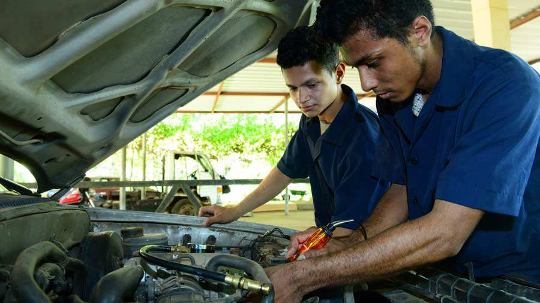

INICIO
Dimmsdale Times
NACIONALES
INTERNACIONALES
CULTURA
OPINIÓN
Nacionales
___________________________________________________________________________________________
TSE
Tribunal Electoral hará ajustes a sistema coreano para usarlo en comicios de 2019
Los magistrados del Tribunal Supremo Electoral (TSE) tendrán que realizar ajustes al sistema coreano para hacer el procesamiento de datos y transmisión de resultados electorales en los próximos comicios presidenciales del 3 de febrero de 2019.
Académico

Alcaldías ofrecen becas para evitar cierre del Instituto Tecnológico de Usulután
Setenta jóvenes podrán aplicar a una beca de estudio en el Instituto Tecnológico de Usulután (Itu), a través del apoyo de seis alcaldías, que financiarán la formación superior de jóvenes de escasos recursos.
Presidencia
Empresa privada pide transparencia en cuáles fueron los motivos reales para abrir relaciones con China
Los presidentes de la Asociación Nacional de la Empresa Privada, Asociación de Industriales y de la Cámara de Comercio exigieron al Gobierno que transparenten los motivos por los que se decidió romper relaciones diplomáticas con Taiwán para aceptar a China.
Folclore
El festival del tamal se realiza este domingo ¿te animas?
Si gustas conocer lugares, ir a festivales y probar platillos típicos o fuera de lo común, toma en cuenta las siguientes opciones para disfrutar con tu familia o amigos este fin de semana.